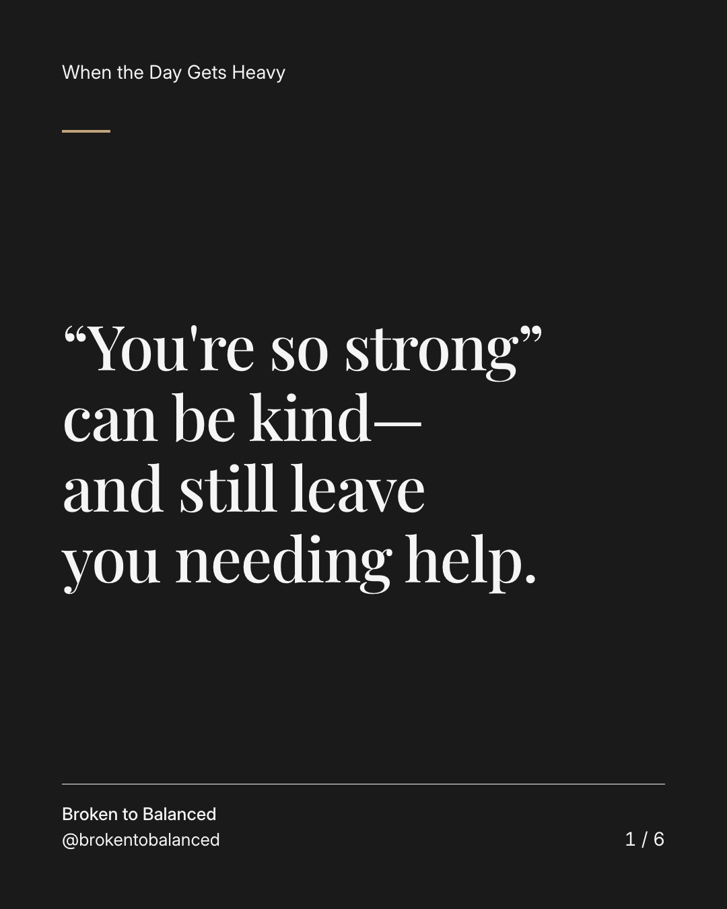
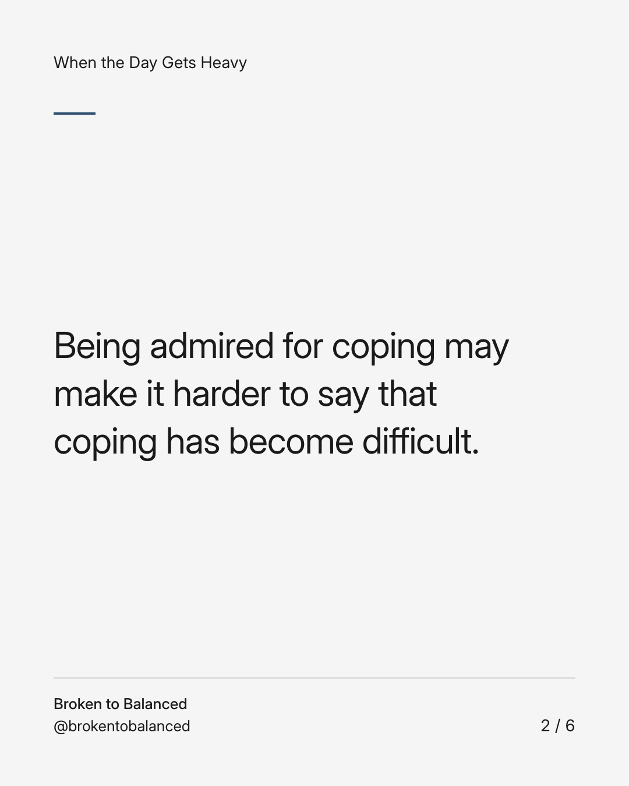
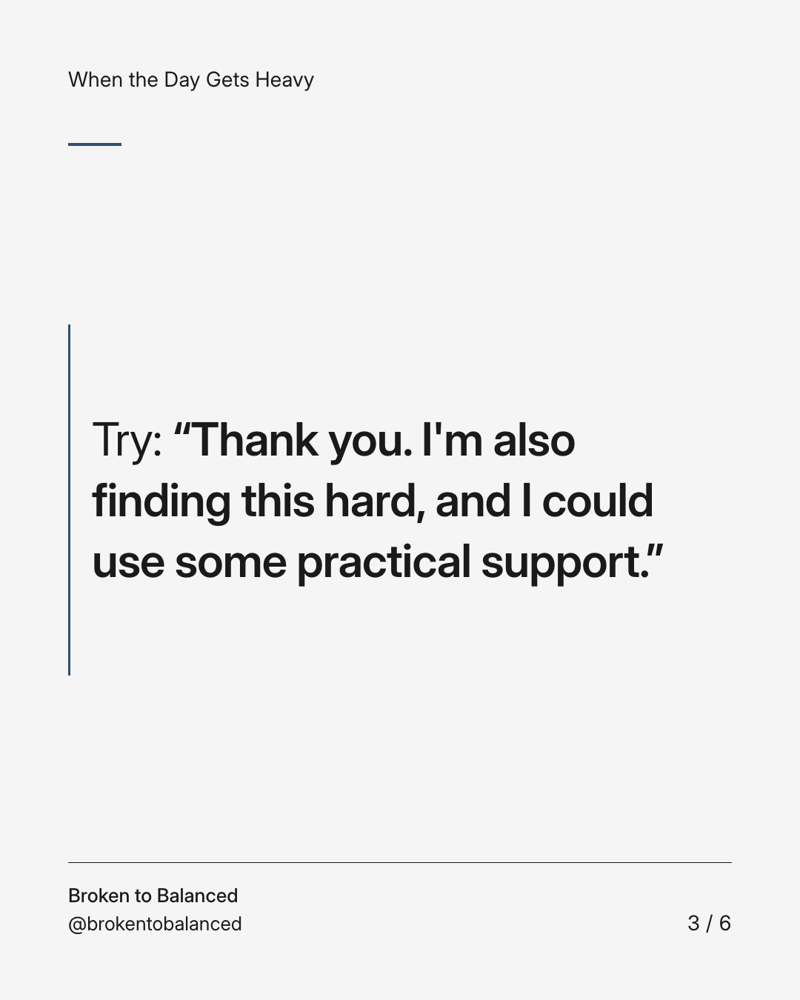
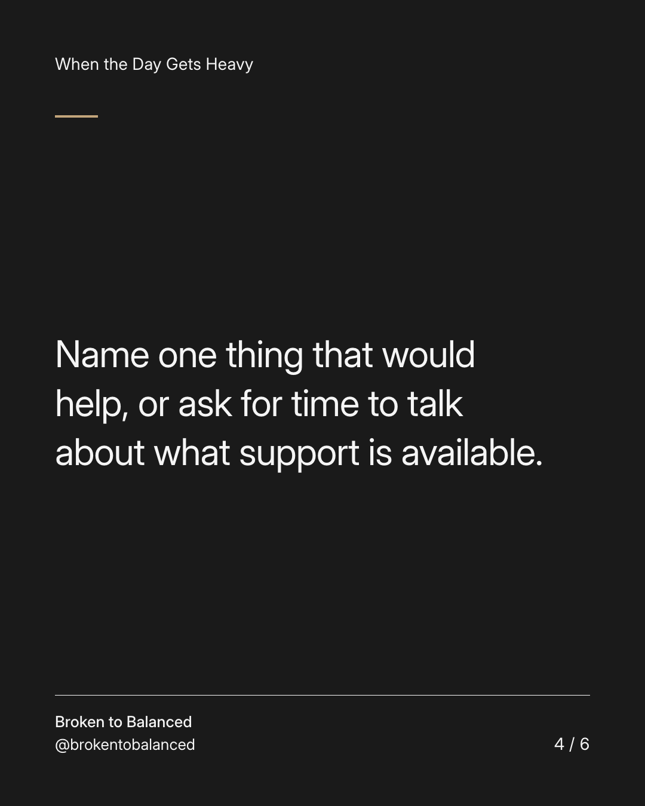
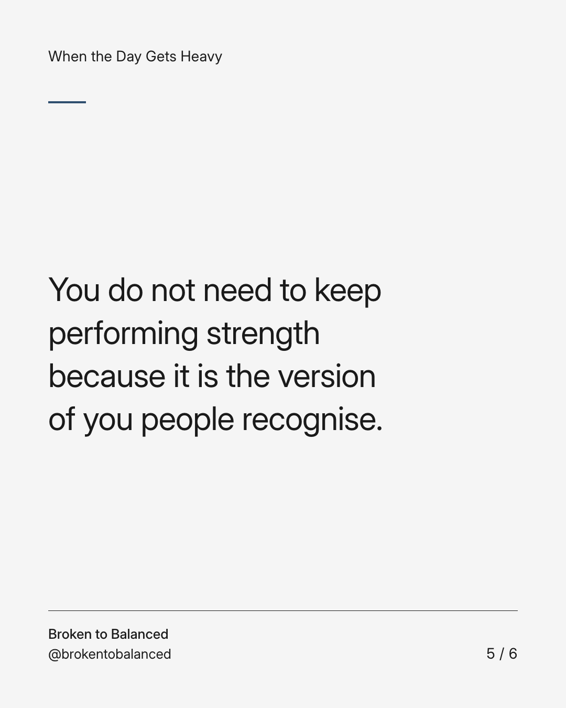
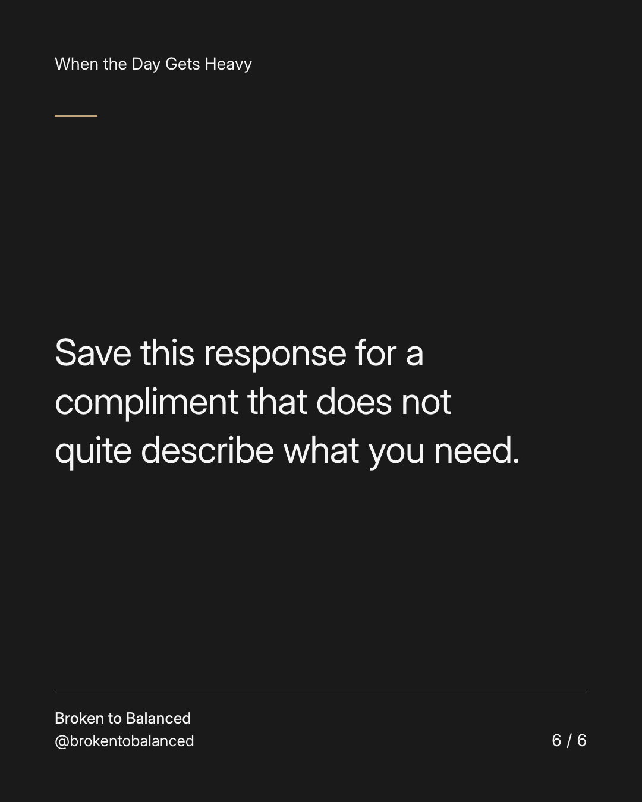

Exact text and accessibility text
“You're so strong” can be kind—and still leave you needing help.
Slide 1 of 6. “You're so strong” can be kind—and still leave you needing help.


Exact text and accessibility text
Being admired for coping may make it harder to say that coping has become difficult.
Slide 2 of 6. Being admired for coping may make it harder to say that coping has become difficult.


Exact text and accessibility text
Try: “Thank you. I'm also finding this hard, and I could use some practical support.”
Slide 3 of 6. Try: “Thank you. I'm also finding this hard, and I could use some practical support.”


Exact text and accessibility text
Name one thing that would help, or ask for time to talk about what support is available.
Slide 4 of 6. Name one thing that would help, or ask for time to talk about what support is available.


Exact text and accessibility text
You do not need to keep performing strength because it is the version of you people recognise.
Slide 5 of 6. You do not need to keep performing strength because it is the version of you people recognise.


Exact text and accessibility text
Save this response for a compliment that does not quite describe what you need.
Slide 6 of 6. Save this response for a compliment that does not quite describe what you need.
Exact caption
Plain-text fallback: select and copy the caption.